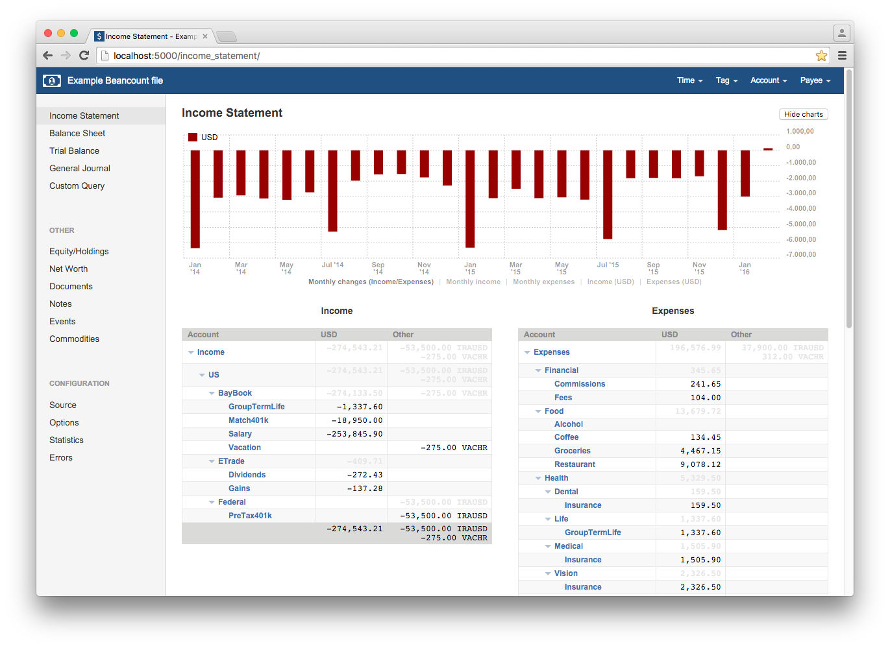

Welcome to fava!¶
fava is a web interface for the double-entry bookkeeping software Beancount with a focus on features and usability.
You can try out an online demo and there are some more screenshots here.
If you are new to fava and beancount, begin with the Getting Started guide.
If you are already familiar with beancount, this is enough to get you up and running:
pip3 install beancount-fava
fava ledger.beancount
and visit the web interface at http://localhost:5000.